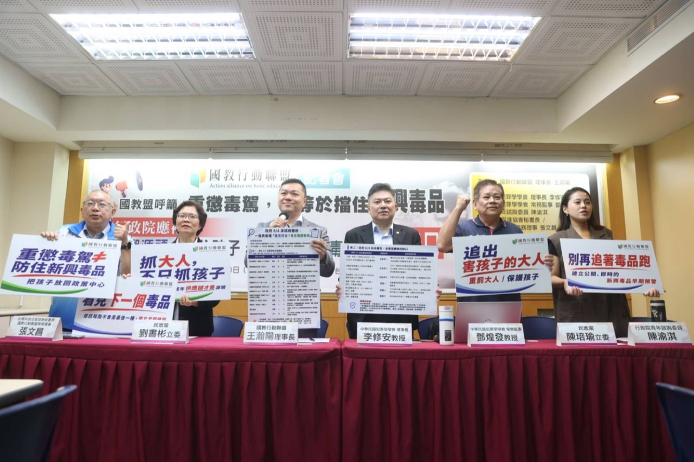
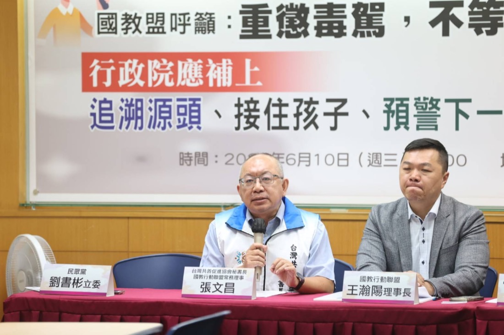

國教盟呼籲：重懲毒駕，不等於擋住新興毒品
行政院與立法院應補上「處理成少共犯、接住離校與高風險少年、預警下一個新興毒品」三大缺口——把孩子放回政策中心。

近期依托咪酯（俗稱「喪屍煙彈」）引發毒駕與公共安全疑慮。行政院 6 月 4 日提出《毒品及毒駕防制專案報告》，從「源頭嚇阻、強化查緝、重懲毒駕」三大面向提出 14 項作為。國教行動聯盟肯定政府快速回應毒駕問題；但毒駕只是新興毒品外溢到道路上的結果，重懲毒駕，絕不等於有效阻擋新興毒品。毒駕統計是看得見的道路公共危險，背後卻隱藏校園、網路與離校少年端不斷累積的風險。
孩子接觸毒品、被供應鏈吸收，往往早在方向盤前面就已經發生。孩子不是源頭，孩子是末端；抓到孩子不是終點，追到利用孩子的大人才是。
—— 國教行動聯盟 理事長 王瀚陽
國教盟指出，毒品分級、前驅物列管、查緝量能與確認檢驗制度都是必要配套；但新興毒品治理不能只停在「列管、查緝、重罰」。完整防制必須由行政院與立法院同步補上三個缺口。
1 處理成少共犯：重罰大人、保護孩子
少年涉毒案件，不應只停在學生懲處、校安通報或少年處遇。少年接觸毒品，背後常涉及「成少共犯」——由成年人供應、引誘、轉售、分裝、網路販賣，甚至犯罪組織之吸收。據內政部警政署向立法院專題報告，民國 113 年成少共犯約占少年案件三成（29.83%）且近年呈上升趨勢；其中詐欺案逾半涉及成年共犯（53.06%）、妨害秩序更達 59.57%。今年第 14 波「安居緝毒專案」亦同步溯源查獲具學生或青少年身分之供毒藥頭 188 人，顯示青少年可能被毒品供應鏈與犯罪組織利用，成為滲透同儕、校園與生活圈的節點。
然而，司法院 5 月 22 日（第 220 次院會）通過的《少年事件處理法》部分條文修正草案，重點放在被害人訴訟參與、假釋門檻與前案紀錄塗銷，卻未針對成少共犯建立特別程序。成少共犯真正的問題，不只是少年的犯罪成本，而是成年人與犯罪組織利用少年司法保護制度「套利」。國教盟呼籲立法院於審議少事法時併案增訂「成少共犯案件特別程序」專章，處理成年人與少年案件分流造成的偵查割裂、強制處分不同步、少年共犯作證時機錯失與向上溯源困難。少年事件處理法第 85 條、毒品危害防制條例第 9 條、組織犯罪防制條例第 4 條已有重罰大人的實體法基礎；立法院應補上程序工具，讓犯罪組織不能再躲在少年司法保護傘後面。

2 接住離校與高風險少年：補人力也補斷點
《學生輔導法》第 11 條、第 11-1 條增置專業輔導人員及督導人員，已於 2024 年 12 月 18 日修正公布，但施行日期仍由行政院定之。國教盟指出，國家衛生研究院陳娟瑜研究團隊追蹤 1,605 名曾使用非法藥物國中生發現：35% 在 4 年內再次被通報、25.6% 有低收或貧窮狀況、16% 有家人使用毒品（約為一般國中生的 8 倍）、有 35% 曾就學中斷；而提供高風險家庭服務，可降低約 43% 再次使用非法藥物的風險。用藥往往不是單一個人的偏差，而是支持系統共同失靈的警訊。國教盟要求行政院立即核定施行日期與經費，補足校內輔導教師、專業輔導人員及縣市學生輔導諮商中心量能；並對已中輟、離校、長期缺課、涉毒、涉詐或疑似遭幫派吸收的少年，另建教育、社政、警政、司法、衛政與毒防中心共同銜接的追蹤與轉介機制。孩子一旦離開學校，絕不應等於離開國家保護。
3 預警下一個新興毒品：而非等下一個事件發生
依托咪酯不會是最後一種新興毒品。地下市場常透過改變化學結構、包裝形式與販售通路，規避既有列管與查緝；政府若只在事件爆發後才補列管，就永遠慢毒販一步。審計部已公開指出，我國新興毒品預警及提報列管機制過去欠缺明確客觀標準，可能影響早期預警管制成效。國教盟要求行政院建立公開、即時、跨部會的 NPS（新精神活性物質）早期預警機制，每月公布監測儀表板，整合檢驗、警政、司法、醫療、毒防中心、校安、社政與網路販售訊號，並對接聯合國毒品和犯罪問題辦公室（UNODC）之早期預警諮詢機制。
國教盟同時強調配套基礎：支持將「依托咪酯酸」等前驅物納入毒品審議與管制討論，並建立可疑交易通報制度；行政院也應提出第二層確認檢驗（液相層析串聯質譜，LC-MS/MS）量能之建置時程、預算、人力、縣市分工與 KPI，讓科學證據足以支撐查緝、起訴與審判。
6/18 毒品防制會報、立法院少事法審議，請同步對帳這三件事
政府若要真正防住下一波新興毒品，就不能只看毒駕車禍與查獲數字，更必須把孩子放回政策中心。國教行動聯盟將持續監督行政院毒品防制會報與立法院少事法審議進度，並定期對帳。
常見問題
Q1：重懲毒駕不就能解決新興毒品問題嗎？
毒駕只是新興毒品外溢到道路上的結果之一，而非問題本身。依托咪酯以電子煙形式在青少年與校園間流通，多數接觸者並未駕車，不會出現在毒駕統計中。重懲毒駕對會駕車者或許有效，但無法涵蓋校園與離校端的少年，兩者須同步補齊。
Q2：國教盟說的三大缺口是哪三個？
一、處理成少共犯：立法院併案增訂「成少共犯案件特別程序」專章，重罰利用少年的大人；二、接住孩子：核定學生輔導法施行日與經費、補足輔導人力、建立離校與高風險少年追蹤網；三、預警下一個毒品：建立公開、即時、跨部會的 NPS 早期預警機制。
Q3：什麼是「成少共犯」？為什麼需要特別程序？
成少共犯指少年觸法案件中與成年人共同實施、且查獲共犯含成年人者。據警政署向立法院專題報告，113 年成少共犯約占少年案件三成（29.83%），其中詐欺案逾半涉及成年共犯（53.06%）、妨害秩序達 59.57%。司法院 5/22 通過的少事法修正草案聚焦被害人訴訟參與、假釋門檻與前案紀錄塗銷，卻未針對成少共犯建立特別程序，致成年人與犯罪組織得利用少年司法保護制度套利。國教盟籲立法院併案增訂特別程序，處理偵查割裂、強制處分不同步、作證時機錯失與向上溯源困難。
Q4：已經有法律可以追究成年供應者嗎？
有。少年事件處理法第 85 條、毒品危害防制條例第 9 條、組織犯罪防制條例第 4 條，已提供追究成年人利用少年犯罪、對未成年人販毒、招募少年入幫的重罰實體法基礎。缺的是程序工具——立法院應增訂成少共犯案件特別程序，讓檢警能向上溯源。
Q5：學生輔導法不是已經修正公布了嗎？
修正公布不等於施行。第 11 條、第 11-1 條已於 2024 年 12 月修正公布增置專業輔導與督導人員，但施行日期仍由行政院定之。在核定施行日與經費之前，專業輔導人力的到位即缺乏法源與預算依據。
Q6：國教盟對 6/18 與立法院的要求是什麼？
請行政院毒品防制會報與立法院少事法審議同步對帳三件事：是否增訂成少共犯案件特別程序？是否核定學生輔導法第 11、11-1 條施行日與經費並建立離校與高風險少年追蹤網？是否建立公開、即時、跨部會的新興毒品早期預警機制？
參考資料
- 行政院（2026/6/4）。《毒品及毒駕防制專案報告》。連結
- 司法院（2026/5/22）。〈司法院第 220 次院會通過《少年事件處理法》部分條文修正草案〉（聚焦被害人訴訟參與、假釋門檻、前案紀錄塗銷，未設成少共犯特別程序）。連結
- 內政部警政署。立法院專題報告〈成少共犯如何解？院、檢、警協作與社政教育體系整合策進展望〉（113 年成少共犯約占 29.83%；詐欺類成少共犯 53.06%、妨害秩序 59.57%）。連結
- ETtoday 新聞雲（2026/6/9）。〈六大系統聯手掃蕩 安居緝毒專案逮 2,225 毒蟲＋1,744 公斤毒品〉（第 14 波安居緝毒成果、政務委員林明昕說明；溯源查獲學生／青少年供毒藥頭 188 人）。連結
- 中央通訊社（2026/6/3）。〈毒品原料依托咪酯酸未納管 劉世芳：毒審會討論〉。連結
- 審計部（2026/5/15）。〈新興毒品預警及提報列管機制未盡周延，審計部促請改善〉。連結
- 國家衛生研究院（2025）。〈高風險家庭服務的介入可降低國中生非法藥物使用者的再用風險〉（陳娟瑜研究團隊）。連結
- 全國法規資料庫：學生輔導法、少年事件處理法（第 85 條）、毒品危害防制條例（第 9 條）、組織犯罪防制條例（第 4 條）。
- UNODC. Early Warning Advisory on New Psychoactive Substances（NPS 定義與分類）。連結